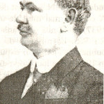
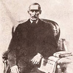
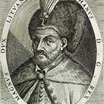
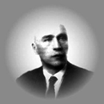
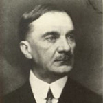
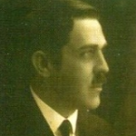

DESPRE ORAS
Repere geografice
Şimleu Silvaniei (în maghiară Szilagysomlyo,, în traducere „Şimleu Sălajului”, în idiş Shamloya, în germană Schomlenmarkt) este situat în partea de vest a judeţului Sălaj, la o distanță de 29 km pe şoseaua naţională D.N. 1H faţă de municipiul Zalău, reşedinţa judeţului Sălaj. Împreună cu localităţile rurale componente: Bic, Cehei şi Pustă ,ocupă o suprafaţă de 62,26 km2 sub Măgura Şimleului, în bazinul hidrografic al Crasnei.
Este aşezat în lunca şi terasele a II-a şi a III-a ale Văii Crasna fiind dominat în partea de nord de masivul cristalin al Măgurii Şimleului, rămăşită a unui vechi lanţ cristalin, având aspect de muncel şi o altitudine maximă de 597 m. Dealurile premontane din împrejurimile oraşului au aspectul unor culmi domoale, în cea mai mare parte despădurite.
Se învecinează cu localităţile:
- la Est cu satul Pericei, comuna Pericei
- la Nord – Est cu satul Badacin, comuna Pericei
- la Nord cu satul Giurtelecul Şimleului, comuna Maieriste
- la Nord – Vest cu satul Uileacu Şimleului şi satul Cristelec, comuna Maieriste
- la Vest cu satul Bilghezd, comuna Nuşfalău
- la Sud – Vest cu satul Nuşfalău, comuna Nuşfalău
- la Sud cu satele Huseni şi Ratin, comuna Crasna
- la Sud – Est cu satul Crasna, comuna Crasna
Raul Crasna, al doilea râu important al judeţului Sălaj, care izvorăşte din Înşeuarea Oşeană, aflată între Munţii Meseş şi Munţii Plopiş, influenţează în mod direct relieful oraşului, fiind principalul agent modelator al acestuia.
Trăsăturile climatice ale oraşului sunt condiţionate de factori generali şi locali. În linii mari, ţinutul se încadrează în sectorul cu climă temperată cu uşoare influenţe oceanice. De aici rezultă prezenţa unor temperaturi medii anuale de aproximativ 9 grade Celsius şi o amplitudine ce variază între 19,3 şi 27,6 grade Celsius. Aspectul depresionar al reliefului, favorizează pătrunderea dinspre S-S.E. a maselor de aer şi stagnarea lor având drept consecinţă apariţia fenomenelor de inversiune termică. În afară de inversiunile de temperatură, mai sunt caracteristice brumele timpurii şi uneori şi cele târzii, un număr redus de zile cu ceaţă şi umiditate ridicată de vale în raport cu versanţii. Cantitatea medie anuală a precipitaţiilor este de 700mm, cu un maxim în lunile iunie-iulie şi cu un minim în martie. Vânturile cele mai frecvente bat din sectorul V. şi N.V. şi aduc cu ele umezeală. În partea estică a oraşului, au fost descoperite izvoare termale. Temperatura apei are 40 grade Celsius şi un conţinut de săruri asemănător cu cel de la băile Boghiş. Izvorul este legat de falia râului Crasna ce continuă până în apropierea localităţii Supuru de Jos.
Atestarea istorică a oraşului Şimleu Silvaniei
Aşezat la poalele dealuluiMăgura, în frumoasa depresiune care-i poarta numele, oraşul Şimleu Silvaniei a fost atestat documentar pentru prima dată în anul 1251, când într-un document emis la Alba-Iulia, se aminteşte de „Vathaşomlya„, prima denumire cunoscută a localitătii. La 1251 Vatha, împreună cu fiii săi Pauşa şi Dionisie au vândut moşia Şimleu palatinului Roland şi magistratului Mauriciu din familia Pok pentru suma de 100 de florini. O ipoteză este că denumirea reală a localitătii a fost „Vatha Solyomvar” (Cetatea Şoimului a lui Vath ). Localitatea Cehei este amintită documentar în anul 1259 sub denumirea de „Terra Chechy”, iar în anul 1854 sub denumirea de „Şomlyo Csehi”. Celelalte localități sunt atestate mult mai târziu, respectiv Pusta în anul 1913 sub denumirea de „Csehipuszta” şi „Bic” în anul 1956 sub denumirea actuală. Istoria oraşului este cu mult mai veche decât anul 1251, acest ţinut făcând parte din statul lui Burebista şi Decebal, conform descoperirilor arheologice făcute pe dealul Măgura Şimleului, ca şi tezaurul dacic de argint de la Cehei, datând de la sfârşitul sec. al II – lea î.Hr , care pun în lumină existenţa unei puternice aşezări dacice, probabil antica Dacidava, pomenită de geograful Ptolomeu în al său „Îndreptar geografic”.
Cateva personalitati marcante ale orasului
Alexandru Aciu (1875-1954):
Un loc de seamă în viața socială și culturală a Șimleului l-a avut dr. Alexandru Aciu, avocat, deputat de Sălaj, senator, fost prefect și director al „Silvaniei”. Dr. Alexandru Aciu s-a născut la 16 septembrie 1875 în Maieriste, urmând dreptul la Cluj și Budapesta, luându-și doctoratul în drept. O perioadă din viața sa este legată de „Gazeta de Duminecă” din Șimleu, pe care a sprijinit-o și în care a scris decenii de-a rândul. S-a exersat și în domeniul literaturii, cu poezii și schițe, cu o notă aparte, pline de o ușoară melancolie și de un real talent. Există însă momente de seamă în viața sa, momente care țin de marele act al întregirii neamului, de la 1 decembrie 1918. Fiind implicat în toate acțiunile sociale și culturale legate de Șimleu, Alexandru Aciu a suportat stările de lucruri declanșate în preajma pregătirii Unirii celei mari. El însuși evoca aceste stări de lucruri, ca și Coriolan Mesesianu, într-un studiu al său, publicat de Tiron Albani, în volumul: „Douăzeci de ani de la Unire”, apărut în 1938. Studiul lui Alexandru Aciu se intitulează: „Șimleul sub linie demarcațională”.
Simion Bărnuțiu (1808-1864):
Simion Barnuțiu, cel care a fost profetul cu „glasul de tunet” în revoluția de la 1848, aparține țării sale, Sălajului, aparține Șimleului și Bocșei sale natale. El a învățat la gimnaziul din Șimleu, la așa numitul Gimnaziu al Minorităților, clădit, după cum scrie pe frontispiciul de la intrare, în 1829. Localul e mai vechi, dar probabil a fost pregătit în 1829 în scopul amintit. Bărnuțiu a învățat aici în vechea clădire unde pașii lui au răsunat prin acele clase, frumos boltite. Din 1825 exista aici un învățământ organizat. La Șimleu, Bărnuțiu a venit din Bocșa fiind un băiat firav, dar pornit pe învățătură. De la Șimleu a plecat la Gimnnaziul din Carei, apoi la Blaj, dar la Șimleu Silvaniei s-a întors întotdeauna ca acasă. Era orașul lui, mai cald pentru el decât Zalăul, stăpânit de feudalul Wesselenyi.
Ștefan Bathory (1533-1586):
Ștefan Bathory s-a născut pe 27 septembrie 1533 la Șimleu Silvaniei, a decedat în 12 decembrie 1586 în apropiere de Grodno (azi: Hrodna) principatul Lituaniei azi Bielorusia fiind între 1575 și 1586 regele Lituaniei și Poloniei, fiind cel mai renumit descendent al familiei Bathory, acestei familii de nobili îi aparține și nepoata lui Erzsebet Bathory și Sigismund Bathory. Fiind dintr-o familie nobilă intră direct în slujba lui Ioan Sigismund Zapolya principele Transilvaniei fiul lui Ioan Zapolya. La moartea principelui rămas fără urmași, la data de 25 mai 1571, Ștephan Bathory este ales de nobilimea ungară, împotriva voinței Habsburgice din Viena ce voiau un alt predendent ca principe al Transilvaniei. După alegerea lui S. Bathory a izbucnit un conflict militar în Transilvania, S. Bathory alungând rivalul său Ferdinand I din țară 1572.S
Victor Deleu (1876-1939):
Victor Deleu a crescut la Pericei unde a văzut lumina zilei la 25 mai 1876, între oameni modești, dar gata totdeauna de fapte mari. Paginile inedite despre acțiunea lui Victor Deleu pentru realizarea unității naționale sintetizează un ideal de viață, răsfrânt în tripla ipostază, păstrată de memoria documentelor. Momentul Darnița, 13/26 aprilie 1917, a însemnat un moment de cotitură în acțiunea practică de mobilizare a prizonierilor români din Rusia către ideea autodeterminării națiunii române din Transilvania. Sufletul generator al acestei acțiuni a fost sălăjeanul Victor Deleu, o perioadă fostul redactor responsabil al publicației „Gazeta de duminecă” (1904-1910) din Șimleu Silvaniei, unde a desfășurat o susținută activitate culturală, care concentra în temeiurile ei idealul unirii tuturor românilor.
Iuliu Maniu (1873-1953):
Iuliu Maniu s-a născut la Șimleu Silvaniei, acolo unde în locul fostei librării e azi „Casa memorială Iuliu Maniu”. A fost președintele Partidului Național Țărănesc, cu o influență deosebită în Ardeal. Iuliu Maniu, se arată în lucrarea lui N. Iorga,”O viață de om așa cum a fost”, „a fost una din personalitățile marcante ale vieții publice românești care au dominat câteva decenii de viață politică … luptător pentru drepturile românilor din Transilvania”. Activitatea lui Iuliu Maniu de până la 1918 se leagă de eforturile generale ale luptătorilor ardeleni pentru unitate națională. Influența tatălui său, Ioan Maniu, asupra preocupărilor sale s-a resimțit. Astfel că, imediat după procesele memorandiștilor, alături de deputații români Ștefan Cicio Pop, A. Vlad, I. Suciu, Al. Vaida, V. Goldiș, C. Brediceanu, tânărul I. Maniu combate proiectele legilor școlare, care limitau limba română în școli. Împreună cu Valeriu Braniște se opune, în 1906, atotputerniciei oligarhiei maghiare.
Ioan Ossian (1885-1953):
Ioan Ossian s-a născut la 27 martie 1885 în comuna Homorodu de Mijloc, județul Satu Mare. A urmat cursurile primare ale Școlii romano-catolice la Satu Mare (1890-1894), apoi cele secundare la Liceul Premonstratens Oradea (1894-1897) și la Liceul Greco-Catolic din Beiuș(1897-1902) iar cursurile universitare la Facultatea Teologică din Oradea(1902-1906) și Facultatea de Litere a Universității din Cluj (1908-1910) cu specialitatea latină și istorie – principal, filozofie și pedagogie – secundar, luându-și doctoratul în litere și filozofie în 1909/1910, întrunind elogiile unanime. S-a căsătorit cu Cornelia Pop, descendentă a familiei Gheorghe Pop de Băsești, familie din care avea să fie numit primul prefect al județului Sălaj după Marea Unire și din care au provenit alte numeroase personalități care au condus destinele acestor meleaguri. De la 1 septembrie 1910 a funcționat ca profesor la Liceul Greco-Catolic din Beiuș. Prin Ordinul nr. 7569 din 5 iulie 1919, profesor doctor Ioan Ossian este numit director al întâiului liceu românesc din Sălaj : Liceul „Simion Barnuțiu” din Șimleu Silvaniei. Timp de 21 de ani, cu excepția perioadei 1927-1928, când a fost prefect al județului Sălaj, profesor doctor Ioan Ossian a condus cu competență și profesionalism destinele acestui liceu, a format numeroase generații, a contribuit la crearea bazei morale a societății românești, merite recunoscute și pe plan național, liceul fiind considerat în perioada interbelică ca un lacaș de înaltă cultură, de mare prestigiu. Om cu o vastă cultură, eminent pedagog și bun organizator, a fost o adevărată personalitate ce îmbina admirabil inteligența și energia cu voința și nestinsa putere de muncă, a fost tipul intelectualului rasat român din perioada interbelică.